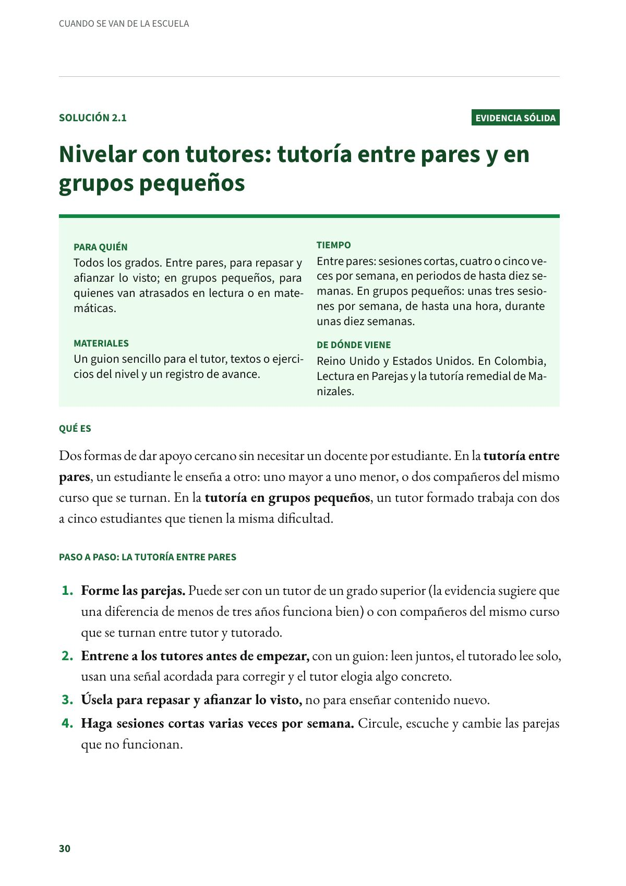
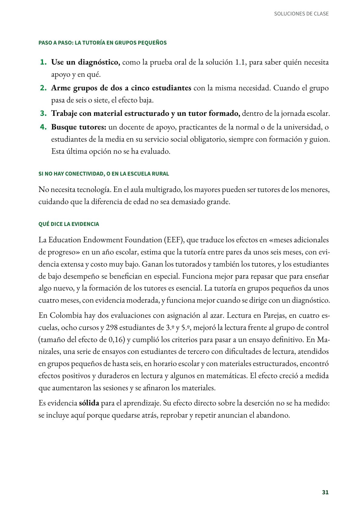
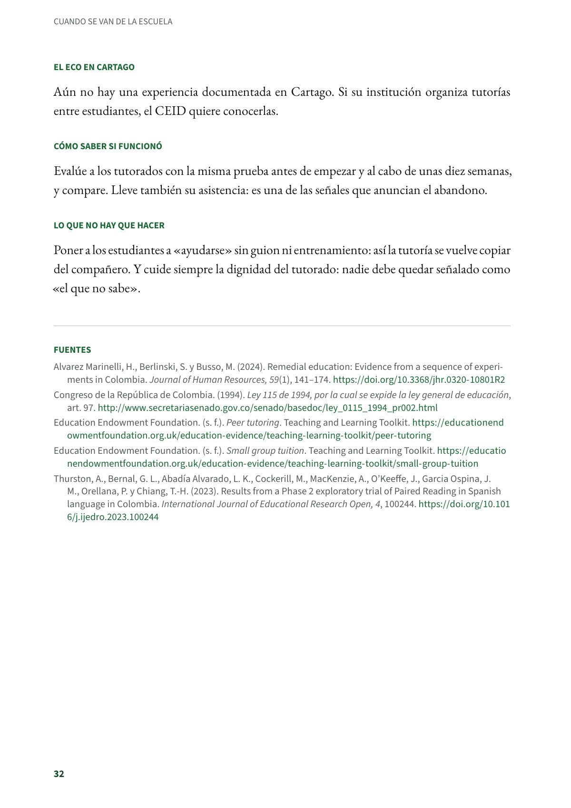

Nivelar con tutores: tutoría entre pares y en grupos pequeños
Dos formas de dar apoyo cercano sin necesitar un docente por estudiante. Todos los grados. Evidencia sólida.
PDF · 4 págs. · 78 KBEn resumen
- Evidencia: sólida.
- Para quién: Todos los grados. Entre pares, para repasar y afianzar lo visto; en grupos pequeños, para quienes van atrasados en lectura o en matemáticas.
- Tiempo: Entre pares: sesiones cortas, cuatro o cinco veces por semana, en periodos de hasta diez semanas. En grupos pequeños: unas tres sesiones por semana, de hasta una hora, durante unas diez semanas.
- Materiales: Un guion sencillo para el tutor, textos o ejercicios del nivel y un registro de avance.
- De dónde viene: Reino Unido y Estados Unidos. En Colombia, Lectura en Parejas y la tutoría remedial de Manizales.
Qué es
Dos formas de dar apoyo cercano sin necesitar un docente por estudiante. En la tutoría entre pares, un estudiante le enseña a otro: uno mayor a uno menor, o dos compañeros del mismo curso que se turnan. En la tutoría en grupos pequeños, un tutor formado trabaja con dos a cinco estudiantes que tienen la misma dificultad.
Paso a paso: la tutoría entre pares
- Forme las parejas. Puede ser con un tutor de un grado superior (la evidencia sugiere que una diferencia de menos de tres años funciona bien) o con compañeros del mismo curso que se turnan entre tutor y tutorado.
- Entrene a los tutores antes de empezar, con un guion: leen juntos, el tutorado lee solo, usan una señal acordada para corregir y el tutor elogia algo concreto.
- Úsela para repasar y afianzar lo visto, no para enseñar contenido nuevo.
- Haga sesiones cortas varias veces por semana. Circule, escuche y cambie las parejas que no funcionan.
Paso a paso: la tutoría en grupos pequeños
- Use un diagnóstico, como la prueba oral de la solución 1.1, para saber quién necesita apoyo y en qué.
- Arme grupos de dos a cinco estudiantes con la misma necesidad. Cuando el grupo pasa de seis o siete, el efecto baja.
- Trabaje con material estructurado y un tutor formado, dentro de la jornada escolar.
- Busque tutores: un docente de apoyo, practicantes de la normal o de la universidad, o estudiantes de la media en su servicio social obligatorio, siempre con formación y guion. Esta última opción no se ha evaluado.
Si no hay conectividad, o en la escuela rural
No necesita tecnología. En el aula multigrado, los mayores pueden ser tutores de los menores, cuidando que la diferencia de edad no sea demasiado grande.
Qué dice la evidencia
La Education Endowment Foundation (EEF), que traduce los efectos en «meses adicionales de progreso» en un año escolar, estima que la tutoría entre pares da unos seis meses, con evidencia extensa y costo muy bajo. Ganan los tutorados y también los tutores, y los estudiantes de bajo desempeño se benefician en especial. Funciona mejor para repasar que para enseñar algo nuevo, y la formación de los tutores es esencial. La tutoría en grupos pequeños da unos cuatro meses, con evidencia moderada, y funciona mejor cuando se dirige con un diagnóstico.
En Colombia hay dos evaluaciones con asignación al azar. Lectura en Parejas, en cuatro escuelas, ocho cursos y 298 estudiantes de 3.º y 5.º, mejoró la lectura frente al grupo de control (tamaño del efecto de 0,16) y cumplió los criterios para pasar a un ensayo definitivo. En Manizales, una serie de ensayos con estudiantes de tercero con dificultades de lectura, atendidos en grupos pequeños de hasta seis, en horario escolar y con materiales estructurados, encontró efectos positivos y duraderos en lectura y algunos en matemáticas. El efecto creció a medida que aumentaron las sesiones y se afinaron los materiales.
Es evidencia sólida para el aprendizaje. Su efecto directo sobre la deserción no se ha medido: se incluye aquí porque quedarse atrás, reprobar y repetir anuncian el abandono.
El eco en Cartago
Aún no hay una experiencia documentada en Cartago. Si su institución organiza tutorías entre estudiantes, el CEID quiere conocerlas.
Cómo saber si funcionó
Evalúe a los tutorados con la misma prueba antes de empezar y al cabo de unas diez semanas, y compare. Lleve también su asistencia: es una de las señales que anuncian el abandono.
Lo que no hay que hacer
Poner a los estudiantes a «ayudarse» sin guion ni entrenamiento: así la tutoría se vuelve copiar del compañero. Y cuide siempre la dignidad del tutorado: nadie debe quedar señalado como «el que no sabe».
Fuentes
Alvarez Marinelli, H., Berlinski, S. y Busso, M. (2024). Remedial education: Evidence from a sequence of experiments in Colombia. Journal of Human Resources, 59(1), 141–174. doi.org
Congreso de la República de Colombia. (1994). Ley 115 de 1994, por la cual se expide la ley general de educación, art. 97. secretariasenado.gov.co
Education Endowment Foundation. (s. f.). Peer tutoring. Teaching and Learning Toolkit. educationendowmentfoundation.org.uk
Education Endowment Foundation. (s. f.). Small group tuition. Teaching and Learning Toolkit. educationendowmentfoundation.org.uk
Thurston, A., Bernal, G. L., Abadía Alvarado, L. K., Cockerill, M., MacKenzie, A., O’Keeffe, J., Garcia Ospina, J. M., Orellana, P. y Chiang, T.-H. (2023). Results from a Phase 2 exploratory trial of Paired Reading in Spanish language in Colombia. International Journal of Educational Research Open, 4, 100244. doi.org
Así se ve en el libro
4 páginas

